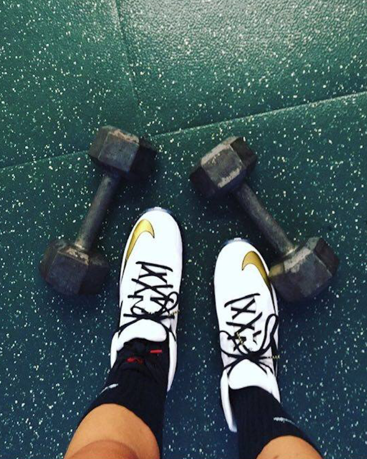

Healthy Eating
Eating healthy is half the battle
Maintaing a healthy diet is extremely important well trying to get in shape.Food is the source of energy for all of our bodily functions and directly affects how our bodies and minds function in every stage of life. Not only will eating healthy make you physically look better, it can help you mentally. Here are a few reasons why you should maintain a healthy diet.
- Increase productivity - you will have more energy to complete everyday tasks.
- Enhance your mood- What you put into your body can impact your mood. Putting fatty and greasy foods can make you feel bloated and gross. Treating your body correctly can overall make you feel better about yourself.
- Regulate your weight Simple healthy choices such as replacing soda with water, choosing veggies instead of chips, and ordering a side salad in place of fries not only will help you lose weight